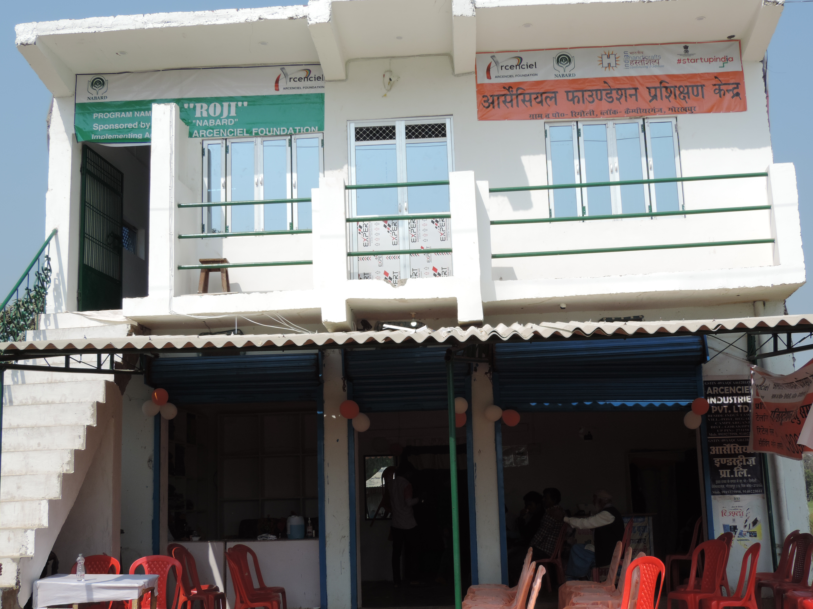
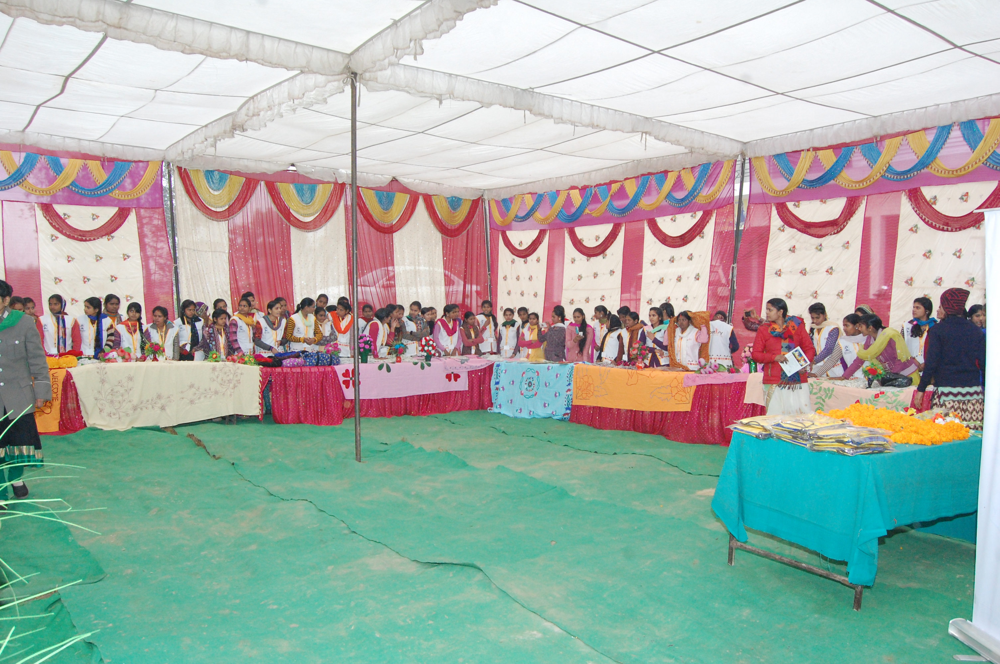
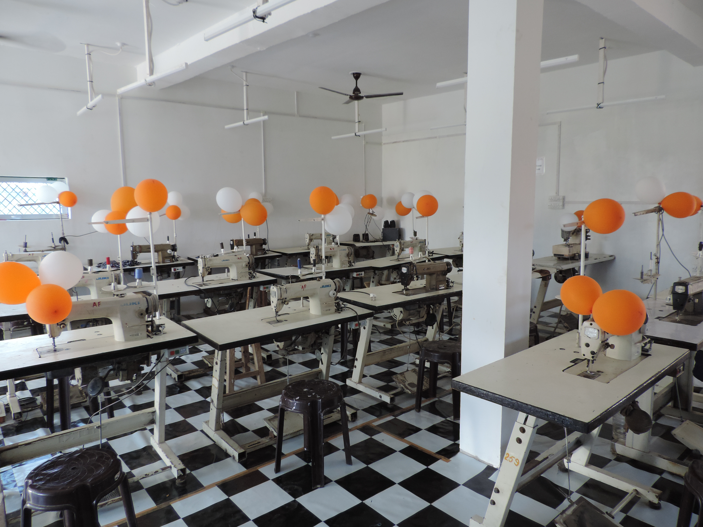
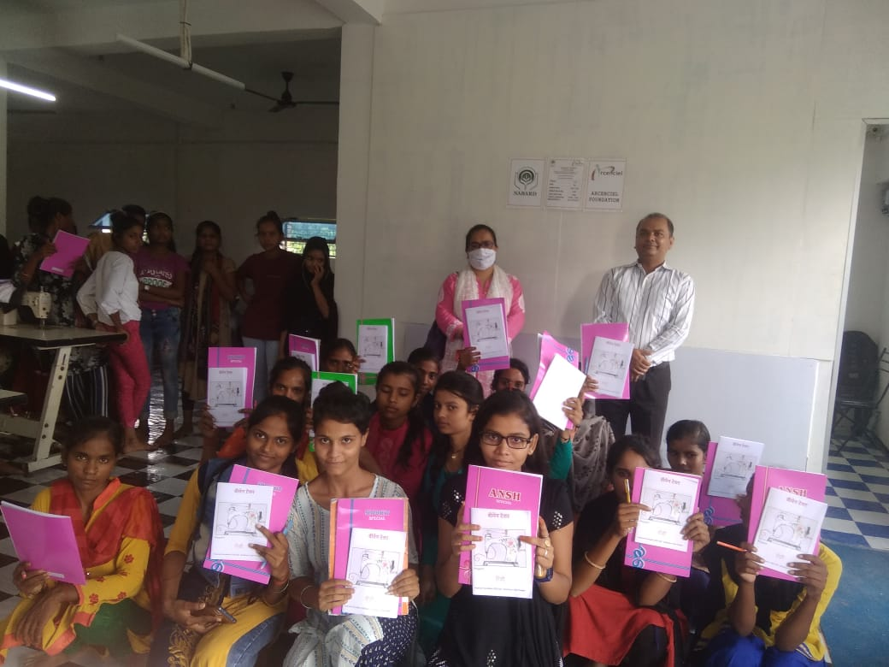
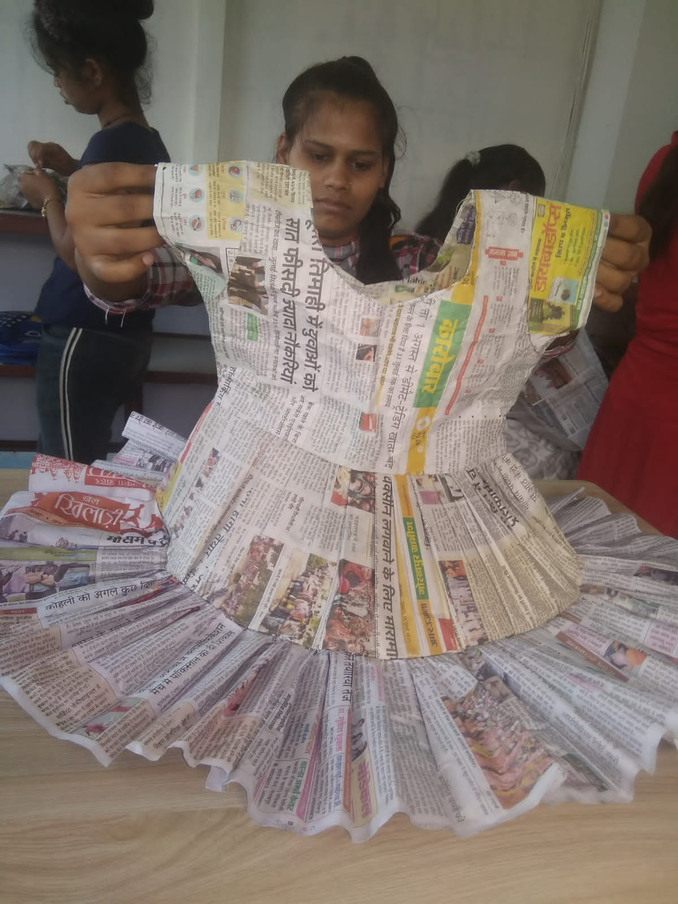
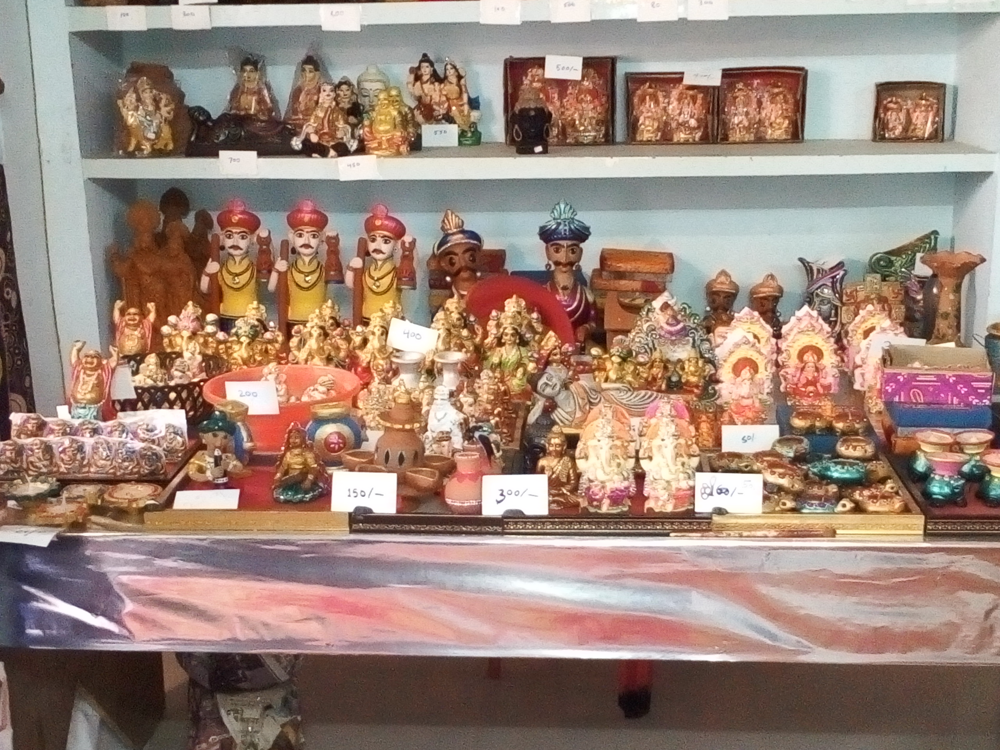
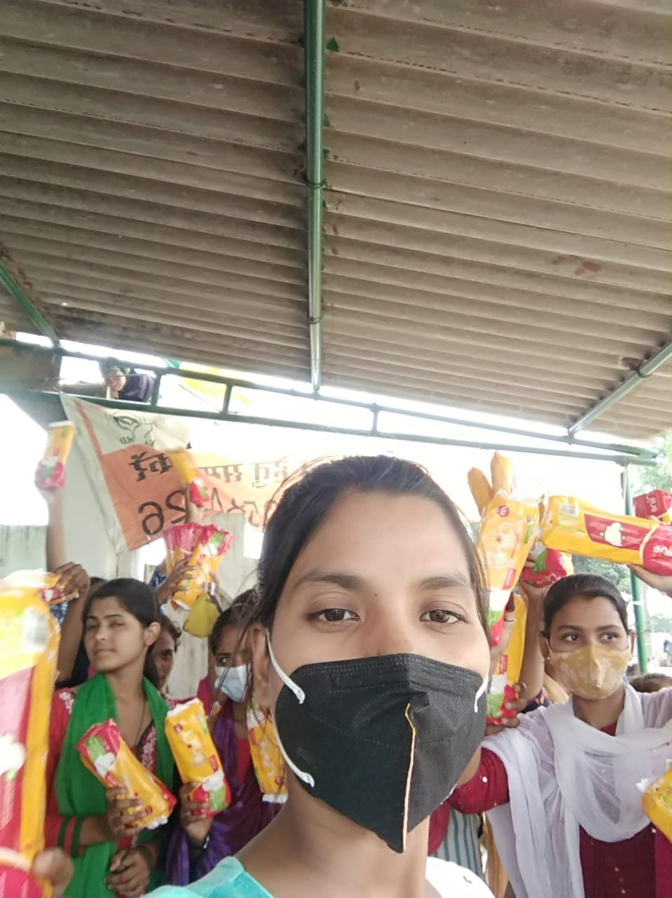
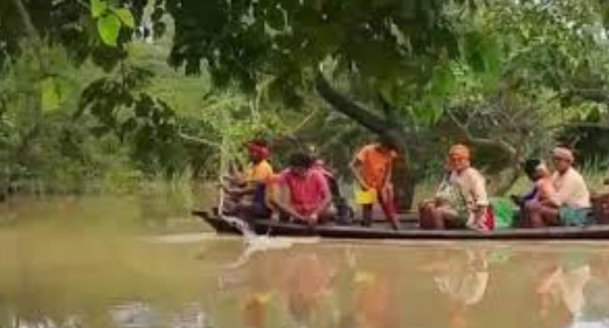

About What We Do Get Involved
Contact Us Media Shop Online
About Us

Arcenciel Foundation is registered as a Private Limited Company in the year 2015,it have 80G & 12A Certified
Non Profit Headquartered
in Gorakhpur u.p. It has been recognized as a startup by the Department of
Industrial Policy & Promotion.
The Foundation aims to bring about sustainable changes in the lives of
socio-economically marginalized sections of the society,
particularly in the lives of vulnerable children and youth.
We want to develop children and youth from the underprivileged communities
as change-makers and help they
rise out of intergenerational cycle of poverty and ignorance
which have acted as barriers to development of
their communities.
We implement scalable, replicable and sustainable programmes that
go a long way in positively impacting the lives the unserved and underserved communities.
What started with a few passionate individuals has now grown into a coordinated and well concerted effort.

“It is better to teach them the skill of earning bread than to satisfy their hunger for a moment.”
Owing to its strength to solve the twin problem of poverty and unemployment,
Arcenciel Foundation is visionary and goal oriented in taking entrepreneurship
development to the masses at the grass root level

Arcenciel Foundation with its vision statement will develop and implement various skill development
and training programs for core and sunrise industrial sectors in partnership with government agencies
and reputed skill development institutes and fight against poverty and unemployment by encouraging
entrepreneurial spirit
WHAT WE DO
- EDUCATION
- SKILL DEVLOPMENT
- ENTREPRENEURSHIP DEVLOPMENT
- WOMEN EMPOWERMENT
- SPORTS
- DISASTER MANAGMENT
- CAMPAIGNS
EDUCATION
Progress is not possible without education;
along with eradication of poverty education accelerates
the country's social and economic development.
Little Misty was not poor because the dreams she used to see,
dreams of going into space, dreams of flying aeroplanes,
dreams of becoming a scientist because her father got her admission in school,
the expansion of her dreams was infinite, she wanted to become a news reader.
Now she has stopped dreaming, after losing her father in an accident,
the responsibilities have suddenly come on her head. Now she also goes to work with her mother.
Her future dreams are now lost somewhere.

Because parents' own level of education and financial uncertainty at the unit level affects the lives of their children.
Because of this, 16 million children like Misty become child labourers.
Arcenciel Foundation as an NGO runs the mission "Satrangi Education" to help thousands of
poor children like Misty and make their dreams come true.
In which such children are given an opportunity to study and move forward,
whose studies are left in the middle due to some reasons.
You can choose the online medium of Arcenciel Foundation for donation to educate a poor child.
It gifts you that child's life-changing benefit for recurring monthly and annual contributions.
Your online donation will ensure that the child receives education,
health care as well as nutritional support through every stage of their young life.
SKILL DEVLOPMENT
India is one of the fastest growing economies of the world with a large youth population.
To sustain this growth, industries in India have a constant demand for skilled youth
But due to poverty in India, most of the youth mainly in rural areas are dropped out of the
theoretical educational system and due to inadequate infrastructure for industry related skills,
millions of youths become unemployable.
Making youth skilled and connecting them with employment has become an essential task..
Since right skill can give right employment to the youth,
therefore the focus of Arcenciell Foundation is to develop right skills in
contemporary situation and to make youth skilled for employment through practical
training "working with hands" and "learning by doing".
Arcenciel Foundation has been imparting skill training to rural women and youth
since last years so that the problem of their livelihood does not arise under any circumstances.
Apart from government schemes, these skill development programs are
operated with the assistance received from CSR and donors,
which is helpful in fighting the problem of unemployment.

Various skill development programs implemented by AF in the past years are as follows:
- Accounts Assistants using ERP software
- Applique artisans
- Beauty & Makeup Assistant
- Computer & Peripherals Technician
- Data Entry Worker
- Digital Literacy
- Front Office cum Receptionist
- Hand Embroidery Artisan
- Hospitality Assistant
- Marketing Staff
- Sewing Machine Mechanic
- Street Fast Food Vendor
- Tailoring
- Travel Executive
ENTREPRENEURSHIP DEVLOPMENT
The entrepreneur is a designer of new ideas and business processes,
with management skills and strong team building abilities often regarded as essential
leadership qualities for successful entrepreneurs. ,
Arcenciel Foundation provides a person with additional skills that can be
used within their business and operated at a higher level than someone who simply “runs" it.
Arcenciel Foundation strives to improve the quality of life of girls and women through
its "Tanya" and "Behan Jii" entrepreneurship development programs. We inspire entrepreneurs
to enter commercial markets with a desire to create wealth and social change based on an ethic
of cooperation, equality and mutual respect.
Arcenciel foundation seeks to advance the broader social,
cultural and environmental goals associated with the voluntary sector in areas
such as poverty alleviation, health care and community development..

Arcenciel Foundation is organizing Entrepreneurship Development Program (EDP) of 4 weeks
duration for unemployed youths with an aim to make them self-reliant by starting their own business.
These programs are sponsored from time to time by the Government of India and State Government
schemes and industrial institutions.
WOMEN EMPOWERMENT
Empowerment of Indian women means opening the door to health,
education and prosperity of the present society and the coming young generation.
Arcenciel Foundation focuses on women empowerment through


digital literacy, skill development, health awareness, sports and arts.
We give importance to the development of women's leadership potential and their
attitude to increase their participation in household institutions and community decision making
SPORTS
Arcenciel Foundation is a sports startup with tag line
"Ab Khelega India"

Sports do not discriminate. Sports accepts and unites, it is the common language we all share
Arcangel Foundation's vision 'Sport' is a skill that contributes to physical fitness,
mental well-being and social interaction.
Arcenciel Sports Academy is a trademark of ARCENCIEL FOUNDATION,
for the promotion of sports and physical education in rural India.
Arcenciel Sports Academy is empowering a whole new generation of children
and girls in Uttar Pradesh, West Bengal and Bihar through sports providing training,
sports equipment, routine health checkups and nutrition for leadership opportunities.
We partner with various sports bodies for training and competitions.
DISASTER MANAGMENT
Disaster risks in India are further exacerbated by changing demographic,
socio-economic conditions – unplanned urbanization, development within high-risk zones,
environmental degradation, climate change, and growing vulnerabilities related to epidemics
and pandemics. Earthquakes, cyclones, tsunamis, floods, landslides and forest fires can
cause catastrophic loss to life and property. All these factors add up to a situation where
disasters seriously endanger the sustainable development of the country,
apart from innumerable lives and livelihoods.

Quick response to such unfortunate natural events and provision of essential
relief like safe drinking water, medical aid, health camps and supply of daily essentials
to the affected communities is done by Arcenciel Foundation.
During disaster, Arcenciel Foundation has undertaken crisis management initiatives
during East Uttar Pradesh flood, Bihar flood and Uttarakhand flood disasters.
The Arcenciel Foundation has worked proactively to reach and respond to the immediate
needs of disaster-affected people, while also maintaining a sustainable approach to helping
them rebuild their lives by facilitating their education, healthcare and livelihoods Is.
CAMPAIGNS
The root cause of the problems is lack of awareness.
Any problem can be solved through awareness in the society.
Various awareness campaigns have been successfully organized by
Arcenciel Foundation with the help of people in the society.
The major ones being:
- "Chalo Padh Le”
On child education,
- “Khelenge Hum-Swasth Rahenge”
Health awareness among girls and children,
- “Jal Bachao-Jan Bachao”,
Awareness to prevent wastage of water,
- “Plastic Hatao- Pashudhan Bachao”
A campaign to protect livestock.
You can support such campaigns.
GET INVOLVED
- BECOME A MEMBER
- INTERN
- VOLUNTEER
- CAMPAIGN
- NGO PARTNERSHIP
- CORPORATE SUPPORT
- DONATE
BECOME A MEMBER
Life Mbership - Arcenciel Foundation
Life membership of Arcenciel Foundation is open to all those of you who are interested in the field of social service.
We welcome all those who want to work to win the fight against malnutrition, poverty and unemployment.
You are welcome as a kind hearted social worker!!!
Contact Us
contact@arcencielfoundation.org
Mob 1231231231
Term & Condition:
You agree to share information entered on this page with Arcenciel Foundation (owner of this page),
adhering to applicable law
INTERN
The Internship at Arcenciel Foundation will help you understand how the nonprofit ecosystem works and
develop leadership potential. Arcenciel foundation offers internships throughout the year no remuneration,
food or accommodation is provided to the intern, but they will be equipped with professional skills and
will be provided with a certificate on successful completion of the internship.
Arcenciel Foundation being a well recognized organization among educational institutions and corporates,
an internship certificate will be valuable on your resume
Contact Us:
contact@arcencielfoundation.org
Mob: 1231231231
VOLUNTEER
Arcenciel Foundation is headquartered in Gorakhpur, Uttar Pradesh state, India.
Simply fill out the form below and start helping improve the lives of children,
youth and women across India by Building Skills, Organizing Events, Fundraising,
Managing Social Media Platforms and much more! Join a friendly team you’ll join a powerful movement of people
Apply now
Online Volunteering
* Applicant must have experience of Web/App Development
Volunteer from Home:
Raise Funds for Arcenciel Foundation
Raise Funds online
NGO PARTNERSHIP
Partner NGO
NGO Partnership Application
- Forms 1 MEMORANDUM OF ASSOCIATION
- Forms 2 FORM FOR THIRD SECTOR PARTNERSHIP PROGRAM FOR NGOs
Please send scanned copy of Form 1 and Form 2 along with NGO registration documents
by email to info@arcencielfoundation.org
CORPORATE SUPPORT
Arcenciel Foundation is a registered Non-Profit Organisation (NGO) working together with Partners & Local Communities in
India improves Environment & Human Well-Being. Arcenciel Foundation is registered under the Pursuant
to sub section (2) of section 7 of the Company act, 2013 and rule 8 of the Companies (Incorporation) Rules,
2014 - CIN: U74120UP2015NPL069618 - 80G & 12A Certified Indian NGO
Welcome to socially conscious companies and organizations who wish to implement their CSR projects
with the Arcenciel Foundation.
This Donor - CSR Partnership Form is for you
Support the following causes:
- Child Education & Women Empowerment
- Skill Development & Entrepreneurship Devlopment
- Arts Culture & Social Welfare
- Drinking Water, Sanitation & Hygiene
- Renewable Energy & Solar Power Systems
- Environment Protection & Waste Management
CONTACT US
OFFICE ADDRESS
Arcenciel Foundation
House Number - 85-B, Medical Road
Kharaiya Pokhra, Basharat Pur,
Gorakhpur - 273004, Uttar Pradesh
E-MAIL ADDRESS
For any enquiries or information, drop in a mail to
contactus@arcencielfoundation.org
MOBILE NUMBER
+91 9451 974 667
MEDIA
- PRESS RELEASE
- EVENTS & UPDATE
- GALLERY
SHOP ONLINE
Arcenciel Behen jii e-Haat
Arcenciel Behen jii e-Haat an integrated E- Marketing platform
for rural women artisans and small scale entrepreneurs that brings
to you the finest products from rural India.
By purchasing products from Arcenciel Behen jii e-Haat, you are helping rural India to rise.